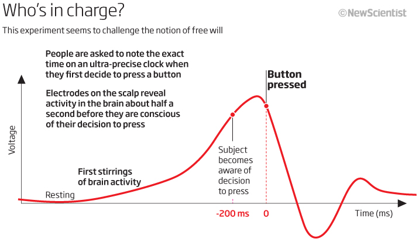
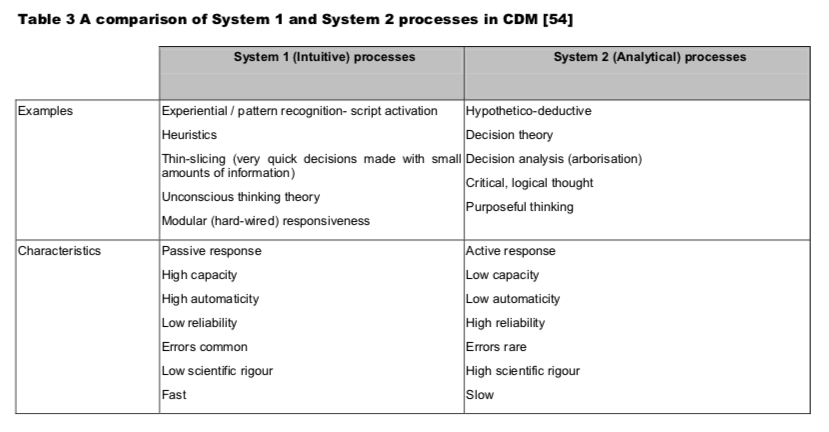

Social Networks - Social Psychology
M Class: Cognitive Biases and Cognitive Science
W Lab: Graph Theory and Social Networks
F Discussion: Weaponizing Social Media and Programmable Humans
This week we begin by examining cognitive biases, persuasion techniques and psychological aspects of human cognition. We'll view human motivation, irrationality, and malleability from a variety of perspectives including social psychology, behavioral economics and cognitive science.
We can translate this theoretical knowledge about individual and social psychology into models to train, predict and evaluate relationships in the real world. In concert, we'll consider techniques to capture, model and exploit human emotions and social behavioral patterns using network theory and graph theory. In concrete terms, our coding will show us how to map social networks using tweets.
All of this background leads up to our Friday discussion: are we being hacked by our technology or can we program humanity into our tools? Tristan Harris made his name arguing for a more careful relationship to our tools lest they "hack" us. Yuval Harari also worries about our "hacked" humanity, most notably because the notions of "rational" humanity inherited from the Enlightenment underpin our political theory. And this conception of what it means to be human is, alas, out of date.
Monday: (Do all the readings before watching Monday's video lecture at the end of this list)
- Analyzing Social Media Data in Python, DataCamp
- Part 1: Basics of Analyzing Twitter Data
- The Biology of Our Best and Worst Selves (15:51) Robert Sapolsky, TED, May 2017
- Unconscious Bias Basics (5:30) Shire Professional, Sep 2015
- Mr. Rogers and the Power of Persuasion (23:40) Will Schoder, Jun 2017
- The Libet Experiment: Is Free Will Just an Illusion? (1:55) BBC Radio 4
- (NEW) Social Networks, Lecture #1 (Attendance will be graded based on question #1 in Friday's Quiz)
Tuesday (Optional):
- Code Review #1 (25mins) for this week's DataCamp.com on Twitter
- Code Review #2 (25mins) for this week's DataCamp.com on Twitter
Wednesday: (Do all the readings before watching Monday's video lecture at the end of this list)
- Analyzing Social Media Data in Python, DataCamp
- Part 2: Processing Twitter Text
- Curmudgeon or Captain Cool? This AI Tool Helps HR Know Your Personality from Your Online Footprints, Sriram Sharma, FactorDaily.com, Jan 2018
- (NEW) Social Networks, Lecture #2 (Attendance will be graded based upon question #2 in Friday's Quiz)
Thursday: (24hr window: Thur 11am EST - Fri 11am EST)
- Social Network Quiz: There will be a two questions on the secret words hidden in the video lectures, one for each video for Monday and Wendesday. Hint: This week's quiz is focused less on multiple choices about diagrams and more on written answers to questions on our readings and video lectures.
Friday Discussion:
- (NEW) Contribute to Friday Discussion: Either via (a) written posts with at least 1 new topic and at least 2 follow up comments on other students' topics on the Padlet.com board titled "Week #9 Social Networks", or (b) live video chat (install Skype) during our normal class time starting Friday at 11:10am EST (email us to RSVP and receive email link invitation at 11:10). Your discussion participation is due by Friday midnight (EST). Please email chunj@kenyon.edu AND elkinsk@kenyon.edu if you have any questions.
- Network Theory (an interactive tutorial) Hint: There will be at least one quiz question from this exercise
- Yuval Noah Harari and Tristan Harris talk to Wired, (56:39) Dec 2018
- Online Big 5 Personality Assessment (Optional) - Know thyself
Discussion Questions:
- What are the top 5 cognitive biases you most frequently fall into (here in detail if you're interested)? It's often reported that we are far more accurate judges of the cognitive biases in others than of the biases we have ourselves. If this is true, can you imagine an evolutionary advantage or other explanation for this asymmetry?
- Evolutionary psychology suggests we developed very fast unconscious heuristics that helped us survive and reproduce in a competitive, dangerous and hostile world. These unconscious heuristics (e.g. implicit bias) evolved over 10,000s years and once favored our reproductive success but now often lie at the heart of ills of modern society like tribalism/racism. Other cognitive biases we've evolved like high-trust social networks render us easy targets for fake news, demagogues or predatory financial lenders. Is there an organic way to become aware of, moderate or optimize our innate biological cognitive irrationalities? If the technology were available to help us overcome biases, would it be ethical to use it?
- Libet's experiment questions the biological reality of free will and has spawned a cottage industry around physiological experiments into free will. Culturally and legally we believe in degrees of free will. Laws recognize the concept of diminished responsibility. For example, older children are held to more accountable than their younger siblings. Morally we tend to judge the consequences for free will by taking into account a wide range of externalities such as upbringing, culture, economic opportunity, IQ, etc. If technology could more accurately and scientifically quantify the biological basis for degrees of free will, should we pursue this and implement technology around such a finding? How would you balance the dehumanizing effects of such technology against the desire for a transparent, fair and accurate assessment of human free will and consequent responsibility normalized around each person's unique degree(s) of free will?
- How programmable do you believe you are? How about your family and friends? How about society at large? The potential threat to society social media represents is proportional to the programmability of the masses. If we've established that all humans are programmable to some degree by evolutionary design (and perhaps many much more so than others), how can social media best be implemented to avoid abusive use by natural monopolies or authoritarian governments? On a sliding scale from the free marketplace of ideas all the way to strict government regulation, where do you find your ideal compromise point and why?

Quiz Topics:
- (NEW) Know the 'secret word' that was possibly embedded letter-by-letter within lecture #1 for Monday's attendance grade
- (NEW) Know the 'secret word' that was possibly embedded letter-by-letter within video lecture #2 for Wednesday's attendance grade
- Be able to explain the curve from Libet's experiment in Fig.1
- Know the major differences between Fast System 1 thinking and Slow System 2 thinking in Fig.2
- Know both Aristotle's 3 Means of Persuasion in Fig.3 and be able to contrast it with Will Schoder's 3 Keys to Behavior Change in Fig.4
- Be able to differentiate between Classical and Operant Conditioning described in Fig.5
- Know the Big 5 Personality Traits according to the OCEAN model in Fig.6
- Know Fig.7 and the stages in Graham's Hierarchy of Disagreement so often seen in escalating disputes on Social Media
- Be able to contrast Plutchik's (8 Primary Bipolar) Wheel of Emotion (Fig.8) with Lovheim's (Biochemical) Cube of Emotion (Fig.9) in BROAD terms (e.g. the 8 and 3 major axis of Plutchik's and Lovheim's respective models)
- Be familiar with some of the major ways different organizations have different definition for the term 'Hate Speech' in Fig.10, why this is and what problem consequently arise from this state of affairs. In BROAD terms be able to write about this citing 3 or so concrete examples.
- Be able to identify and describe some of the major online issues related to hate listed in Fig.11. Be able to give your opinion on how society can maintain and open, free and democratic society increasingly dependent upon social media and the Internet increasingly controlled by a handful of powerful, private and for-profit corporations unaccountable to society at large. In BROAD terms be able to write about this citing 3 or so concrete examples.

